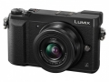

器材库 > APS及其以下画幅可换镜头数码相机 > DMC-GX85

规格总览
产品类型
M4/3画幅可换镜头数码相机
日本地区型号
DMC-GX7 Mark II
北美地区型号
DMC-GX80
发布日期
2016-04-05
影像规格
影像传感器
Live MOS
影像传感器尺寸
17.3×13.0mm
总像素
1684万
有效像素
1600万
色彩滤镜
原色滤镜
色彩空间
sRGB, Adobe RGB
静态图像格式
JPEG, RAW, MPO
静态图像尺寸
[4:3] 4592×3448（L）、3232×2424（M）、2272×1704（S） [3:2] 4592×3064（L）、3232×2160（M）、2272×1520（S） [16:9] 4592×2584（L）、3840×2160（M）、1920×1080（S） [1:1] 3424×3424（L）、2416×2416（M）、1712×1712（S）
静态图像质量
RAW、RAW + 精细、RAW + 标准、精细、标准MPO + 精细/MPO + 标准（配备微型三分之四系统标准的 3D 镜头）
画幅比
3:2, 4:3, 16:9, 1:1
短片格式
AVCHD, MP4
短片尺寸
AVCHD Progressive：FHD 60pAVCHD：FHD 60i, FHD 24pMP4：4K 30p, 4K 24p, FHD 60p, FHD 30p, HD 30p, VGA 30p
防抖系统
5轴双重防抖
除尘系统
SSWF 超声波防尘滤镜
镜头和对焦
镜头卡口
Micro 4/3
对焦系统类型
反差自动对焦系统
对焦模式
AFS（单次）/AFF（灵活）/AFC（连续）/MF
AF辅助灯/光
有
手动对焦
支持
曝光控制
测光系统
1728 区域多重图样传感系统
测光模式
点测光, 多重测光, 中央加权测光
测光范围
0EV~18EV
曝光模式
程序自动曝光、光圈优先自动曝光、快门优先自动曝光、手动曝光
拍摄模式
程序AE(P)、光圈优先AE(A)、快门优先AE(S)、手动曝光(M)、创意动画、自定义(C1,C2,C3)、全景摄影、场景选择、智能自动、智能自动+(iA+)
图像模式
标准/生动/自然/单色/L. 单色/风景/肖像/自定义
创意滤镜
富有表现力/乡愁怀旧/旧时光滤镜/高基调/暗色调/深棕色/单色/动态单色/颗粒单色/柔滑单色/印象艺术/高动态/正片负冲/玩具相机效果/鲜艳玩具相机效果/漂白效果滤镜/微型画效果/柔焦/幻觉滤镜/星光滤镜/单点色彩/阳光滤镜
快门类型
焦平面快门
快门速度
静止图像：60~1/4000秒、T门最长约120秒、电子快门开启：1~1/16000秒动画：1/25~1/16000秒
闪光同步速度
短于 1/160 秒
曝光补偿
±5EV以1/3EV级调整
自动曝光锁
有
自动包围曝光
1/3、2/3 或 1 EV 步长中的 3、5、7 帧，最大值 ±3 EV，单张/连拍
ISO感光度
自动，智能ISO，100，200，400，800，1600，3200，6400，12800，25600（可以1/3EV级调整）
白平衡
自动/日光/阴天/阴影/卤素灯/闪光灯/白平衡预设 1、2、3、4/色温设置
自拍
10 秒，3 张图像/2 秒/10 秒
连拍
机械快门：H：8帧/秒（使用AFS）、6帧/秒（使用AFC），M：6帧/秒（使用实时取景），L：2帧/秒（使用实时取景）电子快门：SH：40帧/秒，H：10帧/秒（使用AFS）、6帧/秒（使用AFC），M：6帧/秒（使用实时取景），L：2帧/秒（使用实时取景）
闪光灯
内置闪光灯
弹出式
闪光指数
GN6.0（ISO 200·m）/ GN4.2（ISO 100·m）
闪光补偿
±3EV以1/3EV级调整
闪光同步模式
前帘同步, 后帘同步
取景器/显示屏
取景器
LVF电子取景器
取景范围
100%
取景放大倍率
约1.39倍 / 等效35mm画幅约0.7倍
屈光度调节范围
-4.0～+3.0（dpt）
LCD类型
彩色TFT LCD
LCD尺寸
3.0英寸
LCD像素
约104万
视野率
约100%
LCD特性
触摸屏, 翻转屏
Live View
有
Live View 显示
水平仪、实时直方图、指导线（3 种图案）、高光显示（静态图像/运动图片）、斑马纹（静态图像/运动图片）
文件输入/输出
存储卡
SD/SDHC, SDXC
数据接口
USB2.0
视频/音频接口
D型HDMI接口
无线功能
Wi-Fi
支持打印协议
PictBridge
电源
电池
锂离子电池组（7.2 伏，1025 毫安时，7.4 瓦时）
续航能力
约 290 张照片（后视监视器），采用 H-FS12032/H-FS35100 时约 270 张照片 (LVF)约 280 张照片（后视监视器），采用 H-H020A 时约 260 张照片 (LVF)
机身规格
颜色
银色, 黑色
尺寸
122×70.6×43.9mm
重量
仅机身约383g / 含电池和存储卡约426g
其它
支持语言
中文（简体）, 中文（繁体）, 英语, 日语, 韩语
工作温度
0~40℃
工作湿度
10~80%
附件
热靴罩、电池组、交流适配器、USB 连接线、肩带、镜头盖（2 个）、镜头遮光盖、镜头后盖
京华烟云2017-04-03 10:543.75 分
操作性 4.00功能性 4.00美观性 4.50趣味性 3.50耐用性 3.00性价比 3.50解像力 3.50色彩还原 4.00
产品图 / 样片
DMC-GX7 Mark II
评测 / 相关文章
- 详细内容 （存档）
- 腼腆的实力战将 松下GX85试用 （存档）
- ［试用］富士奥巴与松下谁是无反单色之王 （存档）
- ［资讯］情怀主义 J.B.发布松下GX85/80新款手柄 （存档）
- ［资讯］DxOMark公布GX80/85传感器成绩 （存档）
- ［资讯］支持更多新品 SILKYPIX发布最新升级 （存档）
- ［试用］松下GX85实拍样片 （存档）
- ［试用］松下GX85与徕卡Nocticron M4/3的体验之旅 （存档）
- ［资讯］松下新品发布 鱼与熊掌可以兼得 （存档）